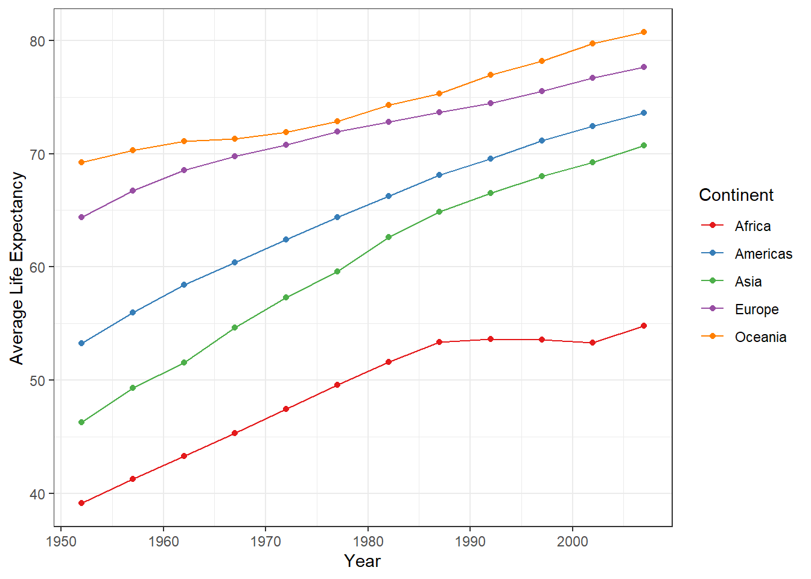

# Using read.csv()
data_read_csv <- read.csv("data.csv")
# Using read_csv() from the readr package
library(readr)
data_readr <- read_csv("data.csv")3 Data Manipulation
Mastering data manipulation and processing techniques in R is essential for anyone working in data analysis or data science. The ability to clean, transform, and prepare data efficiently is crucial to ensure that analysis results are accurate and reliable. Moreover, mastering these techniques saves time and increases productivity.
3.1 Importing External Files
Two of the most common formats for storing not-so-large datasets are csv and xlsx.
When loading data from CSV files in R, two commonly used options are the read.csv() and read_csv() functions. Both are effective for importing tabular data but have significant differences. The read.csv() function is a standard option in base R, being simple to use and widely known. On the other hand, read_csv() is part of the readr package, offering optimized performance and automatic data type detection. While read.csv() tends to be slower, especially with large datasets, read_csv() is faster and more accurate, capable of maintaining column names as symbols and properly handling data, including empty strings.
To import data from an Excel file (xlsx format) in R, we can use the readxl library. First, you need to install it using the command install.packages("readxl"). Then, you can use the read_excel() function to read the data. For example:
library(readxl)
data <- read_excel("file.xlsx")
Setting Your Working Directory
It is good practice to set a working directory in your R scripts because it helps keep things organized and makes it easier to access data files and results. By setting a working directory, you ensure that all files referenced in your scripts will be easily found without needing to specify long absolute paths.
To set the working directory in R, you can use the setwd() function. For example, if you want to set the directory to “C:/MyDirectory”, you can do the following:
setwd("C:/MyDirectory")You can also set the directory using the RStudio interface. Simply select “Session” from the menu, then “Set Working Directory,” and finally “Choose Directory.” This will open a dialog box where you can navigate to the desired directory and select it. After selecting the directory, it will become the current working directory.
3.2 The tidyverse Package
The tidyverse package is a collection of R packages designed to work seamlessly and intuitively for data analysis. It includes a variety of powerful and popular packages such as ggplot2, dplyr, tidyr, tibble, readr, purrr, forcats, and stringr. Each package in the tidyverse is designed to handle a specific step of the data analysis workflow, from importing and cleaning to visualization and modeling. All packages in the tidyverse share a common underlying design philosophy, grammar, and data structures. Learn more on the package page.
3.3 The |> Pipe Operator
The |> operator, known as the pipe, is a powerful tool in R that facilitates chaining operations in sequence. It allows you to write code more clearly and concisely, especially when working with tidyverse packages. The pipe takes the result of an expression on the left and passes it as the first argument to the next expression on the right.
Tip
You don’t need to type |> every time you need it. Use the shortcut Ctrl+Shift+M.
Suppose we have a function f, a function g, and a variable x. We want to apply g to x, and then apply f to the result. Here’s how we could do this in two ways: using the traditional chained approach and using the |> pipe.
result <- f(g(x))
x |>
g() |>
f()Both methods will produce the same result. However, the second approach using the |> pipe is more readable and easier to understand, especially when chaining multiple operations. This makes the code more concise and closer to a natural reading of the operation being performed.
Tip
A good practice when using the |> pipe is to break the line after each pipe to improve code readability.
3.4 Data in Tidy Format
“Tidy datasets are all alike, but every messy dataset is messy in its own way.” — Hadley Wickham.
The same dataset can be represented in various ways. See the code below that shows the same data in three different formats.
table1# A tibble: 6 × 4
country year cases population
<chr> <dbl> <dbl> <dbl>
1 Afghanistan 1999 745 19987071
2 Afghanistan 2000 2666 20595360
3 Brazil 1999 37737 172006362
4 Brazil 2000 80488 174504898
5 China 1999 212258 1272915272
6 China 2000 213766 1280428583table2# A tibble: 12 × 4
country year type count
<chr> <dbl> <chr> <dbl>
1 Afghanistan 1999 cases 745
2 Afghanistan 1999 population 19987071
3 Afghanistan 2000 cases 2666
4 Afghanistan 2000 population 20595360
5 Brazil 1999 cases 37737
6 Brazil 1999 population 172006362
7 Brazil 2000 cases 80488
8 Brazil 2000 population 174504898
9 China 1999 cases 212258
10 China 1999 population 1272915272
11 China 2000 cases 213766
12 China 2000 population 1280428583table4a# A tibble: 3 × 3
country `1999` `2000`
<chr> <dbl> <dbl>
1 Afghanistan 745 2666
2 Brazil 37737 80488
3 China 212258 213766All of the above representations are of the same data, but they are not equally easy to use. table1, for example, will be much more accessible for working within the tidyverse due to its organization in the tidy format. There are three interrelated rules that characterize a dataset in tidy format:
- Each variable is a column; each column represents a variable.
- Each observation is a row; each row represents an observation.
- Each value is a cell; each cell contains a single value.
The figure below graphically represents this concept.

Pivoting data is the process of reorganizing a dataset to make it compatible with the tidy format. This involves transforming the data from a wider format to a longer format, or vice versa, to ensure that each variable corresponds to a column and each observation to a row.
In the example below, we are transforming the data from table2 to a wider format, where each unique value of the variable type becomes a new column. Note that each unit of information (country, year, cases, and count) is split into two rows. This operation makes the data table wider, ensuring that each unit of data is represented in a single row.
table2 |>
pivot_wider(names_from="type", values_from="count")# A tibble: 6 × 4
country year cases population
<chr> <dbl> <dbl> <dbl>
1 Afghanistan 1999 745 19987071
2 Afghanistan 2000 2666 20595360
3 Brazil 1999 37737 172006362
4 Brazil 2000 80488 174504898
5 China 1999 212258 1272915272
6 China 2000 213766 1280428583In the example below, we are transforming the data from table4a to a longer format, where the columns representing specific years (1999 and 2000) are gathered into a single column called year, and the corresponding values are placed in a new column called cases. In this case, the information about years was stored as column names, but according to the tidy data principle, they should be in columns. Therefore, we use the pivot_longer function.
table4a |>
pivot_longer(cols = c(`1999`, `2000`), names_to = "year", values_to = "cases")# A tibble: 6 × 3
country year cases
<chr> <chr> <dbl>
1 Afghanistan 1999 745
2 Afghanistan 2000 2666
3 Brazil 1999 37737
4 Brazil 2000 80488
5 China 1999 212258
6 China 2000 213766The two functions pivot_wider and pivot_longer are sufficient for transforming datasets into tidy format.
3.5 Main Verbs of the dplyr Package
The dplyr package is one of the most powerful tools for data manipulation in the R environment. It offers a cohesive set of functions that simplify common manipulation tasks such as filtering, selecting, grouping, sorting, and summarizing data. dplyr uses an intuitive and consistent syntax, making it easy to write clean and readable code.
Let’s study the functionality of the main verbs of the package. To illustrate, we will use the gapminder dataset. It is a collection of socioeconomic information for various countries over time. See Rosling (2012). It includes variables such as life expectancy, GDP per capita, infant mortality rate, and population size for different countries and years, covering several decades.
To load the gapminder dataset, you need to load the gapminder package. With the gapminder package loaded, the gapminder dataset will be available for use in your R environment:
library(gapminder)Warning: package 'gapminder' was built under R version 4.2.3head(gapminder)The glimpse() function provides a quick and concise overview of the structure of a dataset. When applied to a dataset, like gapminder, it displays essential information about the variables present, including the number of rows, columns, and the first few rows of the dataset:
glimpse(gapminder)Rows: 1,704
Columns: 6
$ country <fct> "Afghanistan", "Afghanistan", "Afghanistan", "Afghanistan", …
$ continent <fct> Asia, Asia, Asia, Asia, Asia, Asia, Asia, Asia, Asia, Asia, …
$ year <int> 1952, 1957, 1962, 1967, 1972, 1977, 1982, 1987, 1992, 1997, …
$ lifeExp <dbl> 28.801, 30.332, 31.997, 34.020, 36.088, 38.438, 39.854, 40.8…
$ pop <int> 8425333, 9240934, 10267083, 11537966, 13079460, 14880372, 12…
$ gdpPercap <dbl> 779.4453, 820.8530, 853.1007, 836.1971, 739.9811, 786.1134, …3.5.1 select
The select() verb is used to select specific columns from a dataset. With select(), you can choose the desired columns based on their names, data types, or other criteria.
For example, considering the gapminder dataset, suppose we want to select only the columns referring to the year, country, life expectancy, and GDP per capita. We can do this as follows:
# Selecting columns by name
gapminder |>
select(year, country, lifeExp, gdpPercap)
# Selecting only numeric columns
gapminder |>
select(where(is.numeric))
# Selecting columns that start with "co"
gapminder |>
select(starts_with("co"))Note that in the above examples, none of the selections was saved to a variable. To save the selections to a variable, you can assign the result of each select() operation to a separate variable. For example:
gapminder_character <- gapminder |>
select(where(is.character))3.5.2 arrange
The verb arrange() is used to reorder the rows of a dataset based on the values of one or more columns. When applied to a dataset, arrange() sorts the rows in ascending or descending order based on the specified column values.
In the first example using the verb select(), we can sort the data by country in alphabetical order as follows:
gapminder |>
select(year, country, lifeExp, gdpPercap, pop) |>
arrange(country)# A tibble: 1,704 × 5
year country lifeExp gdpPercap pop
<int> <fct> <dbl> <dbl> <int>
1 1952 Afghanistan 28.8 779. 8425333
2 1957 Afghanistan 30.3 821. 9240934
3 1962 Afghanistan 32.0 853. 10267083
4 1967 Afghanistan 34.0 836. 11537966
5 1972 Afghanistan 36.1 740. 13079460
6 1977 Afghanistan 38.4 786. 14880372
7 1982 Afghanistan 39.9 978. 12881816
8 1987 Afghanistan 40.8 852. 13867957
9 1992 Afghanistan 41.7 649. 16317921
10 1997 Afghanistan 41.8 635. 22227415
# ℹ 1,694 more rowsIn the example below, we are organizing the data by year in ascending order and life expectancy in descending order within each year.
gapminder |>
select(year, country, lifeExp, gdpPercap, pop) |>
arrange(year, desc(lifeExp))# A tibble: 1,704 × 5
year country lifeExp gdpPercap pop
<int> <fct> <dbl> <dbl> <int>
1 1952 Norway 72.7 10095. 3327728
2 1952 Iceland 72.5 7268. 147962
3 1952 Netherlands 72.1 8942. 10381988
4 1952 Sweden 71.9 8528. 7124673
5 1952 Denmark 70.8 9692. 4334000
6 1952 Switzerland 69.6 14734. 4815000
7 1952 New Zealand 69.4 10557. 1994794
8 1952 United Kingdom 69.2 9980. 50430000
9 1952 Australia 69.1 10040. 8691212
10 1952 Canada 68.8 11367. 14785584
# ℹ 1,694 more rows
Tip
When using the verb select() with the prefix -, you can specify the columns you want to exclude from the dataset. In the example below, we exclude the continent column from the selection.
gapminder |>
select(-continent)# A tibble: 1,704 × 5
country year lifeExp pop gdpPercap
<fct> <int> <dbl> <int> <dbl>
1 Afghanistan 1952 28.8 8425333 779.
2 Afghanistan 1957 30.3 9240934 821.
3 Afghanistan 1962 32.0 10267083 853.
4 Afghanistan 1967 34.0 11537966 836.
5 Afghanistan 1972 36.1 13079460 740.
6 Afghanistan 1977 38.4 14880372 786.
7 Afghanistan 1982 39.9 12881816 978.
8 Afghanistan 1987 40.8 13867957 852.
9 Afghanistan 1992 41.7 16317921 649.
10 Afghanistan 1997 41.8 22227415 635.
# ℹ 1,694 more rows3.5.3 filter
To analyze specific data of interest, it is often necessary to filter the dataset to include only relevant observations. The verb filter() is used for this purpose. Simply define one or more logical conditions that the rows of the dataset must satisfy to be displayed.
In the example below, we filter the data to include only observations where the country is either Brazil or Argentina.
gapminder |>
select(year, country, lifeExp, gdpPercap, pop) |>
arrange(year, desc(lifeExp)) |>
filter(country == "Brazil" | country == "Argentina")# A tibble: 24 × 5
year country lifeExp gdpPercap pop
<int> <fct> <dbl> <dbl> <int>
1 1952 Argentina 62.5 5911. 17876956
2 1952 Brazil 50.9 2109. 56602560
3 1957 Argentina 64.4 6857. 19610538
4 1957 Brazil 53.3 2487. 65551171
5 1962 Argentina 65.1 7133. 21283783
6 1962 Brazil 55.7 3337. 76039390
7 1967 Argentina 65.6 8053. 22934225
8 1967 Brazil 57.6 3430. 88049823
9 1972 Argentina 67.1 9443. 24779799
10 1972 Brazil 59.5 4986. 100840058
# ℹ 14 more rows3.5.4 mutate
The verb mutate() is used to create or modify columns in an existing dataset. It allows adding new variables calculated based on existing variables or modifying existing variables according to specific logic.
For example, we can use mutate() to calculate a new variable representing the total GDP of each country by multiplying per capita GDP by population size. Here’s an example of how to do this with the gapminder dataset:
gapminder_total_gdp <- gapminder |>
select(country, year, lifeExp, gdpPercap, pop) |>
mutate(total_gdp = gdpPercap * pop)3.5.5 summarise
The verb summarise() is used to summarize data into a single row, usually by calculating summary statistics such as mean, sum, median, etc. It allows calculating statistical summaries in a dataset, creating a new table containing the summarized results.
Here is an example of how to use summarise() to calculate the average life expectancy using the gapminder dataset:
gapminder |>
summarise(mean_lifeExp = mean(lifeExp, na.rm = TRUE))# A tibble: 1 × 1
mean_lifeExp
<dbl>
1 59.53.5.6 group by
The verb group_by() is used to split data into groups based on the values of one or more variables. It does not perform calculations by itself but changes the behavior of summary functions, such as summarise(), to operate separately on each group.
Here is an example of how to use group_by() with the gapminder data to calculate the average life expectancy by continent:
gapminder |>
group_by(continent) |>
summarise(mean_lifeExp = mean(lifeExp, na.rm = TRUE))# A tibble: 5 × 2
continent mean_lifeExp
<fct> <dbl>
1 Africa 48.9
2 Americas 64.7
3 Asia 60.1
4 Europe 71.9
5 Oceania 74.3The example below uses all the main verbs of dplyr to calculate the average life expectancy and the average GDP (in thousands) by continent in the year 2007.
gapminder |>
select(country, continent, year, lifeExp, gdpPercap) |>
filter(year == 2007) |> # data only for the year 2007
mutate(gdp = gdpPercap / 1000) |> # represents per capita GDP in thousands
group_by(continent) |> # group the data by continent
summarise(mean_lifeExp = mean(lifeExp, na.rm = TRUE), # average life expectancy
mean_gdp = mean(gdp, na.rm = TRUE)) |> # average per capita GDP in billions
arrange(desc(mean_lifeExp))# A tibble: 5 × 3
continent mean_lifeExp mean_gdp
<fct> <dbl> <dbl>
1 Oceania 80.7 29.8
2 Europe 77.6 25.1
3 Americas 73.6 11.0
4 Asia 70.7 12.5
5 Africa 54.8 3.09The graph below shows the evolution of average life expectancy in the continents over the years.

Challenge
What change was made to the code of the previous example to construct the data used in this graph?
3.6 Helper Functions
Introducing auxiliary functions from the dplyr package that can be very useful in various contexts.
pull,distinct,unite,separate_wider_delim, and the family ofslice_*functions.
gapminder |>
filter(year == 1952) |>
pull(continent) [1] Asia Europe Africa Africa Americas Oceania Europe Asia
[9] Asia Europe Africa Americas Europe Africa Americas Europe
[17] Africa Africa Asia Africa Americas Africa Africa Americas
[25] Asia Americas Africa Africa Africa Americas Africa Europe
[33] Americas Europe Europe Africa Americas Americas Africa Americas
[41] Africa Africa Africa Europe Europe Africa Africa Europe
[49] Africa Europe Americas Africa Africa Americas Americas Asia
[57] Europe Europe Asia Asia Asia Asia Europe Asia
[65] Europe Americas Asia Asia Africa Asia Asia Asia
[73] Asia Africa Africa Africa Africa Africa Asia Africa
[81] Africa Africa Americas Asia Europe Africa Africa Asia
[89] Africa Asia Europe Oceania Americas Africa Africa Europe
[97] Asia Asia Americas Americas Americas Asia Europe Europe
[105] Americas Africa Europe Africa Africa Asia Africa Europe
[113] Africa Asia Europe Europe Africa Africa Europe Asia
[121] Africa Africa Europe Europe Asia Asia Africa Asia
[129] Africa Americas Africa Europe Africa Europe Americas Americas
[137] Americas Asia Asia Asia Africa Africa
Levels: Africa Americas Asia Europe Oceaniagapminder |>
distinct(continent)# A tibble: 5 × 1
continent
<fct>
1 Asia
2 Europe
3 Africa
4 Americas
5 Oceania gapminder |>
slice(1:10)# A tibble: 10 × 6
country continent year lifeExp pop gdpPercap
<fct> <fct> <int> <dbl> <int> <dbl>
1 Afghanistan Asia 1952 28.8 8425333 779.
2 Afghanistan Asia 1957 30.3 9240934 821.
3 Afghanistan Asia 1962 32.0 10267083 853.
4 Afghanistan Asia 1967 34.0 11537966 836.
5 Afghanistan Asia 1972 36.1 13079460 740.
6 Afghanistan Asia 1977 38.4 14880372 786.
7 Afghanistan Asia 1982 39.9 12881816 978.
8 Afghanistan Asia 1987 40.8 13867957 852.
9 Afghanistan Asia 1992 41.7 16317921 649.
10 Afghanistan Asia 1997 41.8 22227415 635.gapminder |>
slice_head(n = 5)# A tibble: 5 × 6
country continent year lifeExp pop gdpPercap
<fct> <fct> <int> <dbl> <int> <dbl>
1 Afghanistan Asia 1952 28.8 8425333 779.
2 Afghanistan Asia 1957 30.3 9240934 821.
3 Afghanistan Asia 1962 32.0 10267083 853.
4 Afghanistan Asia 1967 34.0 11537966 836.
5 Afghanistan Asia 1972 36.1 13079460 740.gapminder |>
slice_tail(n = 5)# A tibble: 5 × 6
country continent year lifeExp pop gdpPercap
<fct> <fct> <int> <dbl> <int> <dbl>
1 Zimbabwe Africa 1987 62.4 9216418 706.
2 Zimbabwe Africa 1992 60.4 10704340 693.
3 Zimbabwe Africa 1997 46.8 11404948 792.
4 Zimbabwe Africa 2002 40.0 11926563 672.
5 Zimbabwe Africa 2007 43.5 12311143 470.set.seed(1)
gapminder |>
slice_sample(n = 10)# A tibble: 10 × 6
country continent year lifeExp pop gdpPercap
<fct> <fct> <int> <dbl> <int> <dbl>
1 Montenegro Europe 1992 75.4 621621 7003.
2 Hungary Europe 1982 69.4 10705535 12546.
3 Benin Africa 1992 53.9 4981671 1191.
4 Malawi Africa 1977 43.8 5637246 663.
5 Thailand Asia 1992 67.3 56667095 4617.
6 El Salvador Americas 1962 52.3 2747687 3777.
7 China Asia 2002 72.0 1280400000 3119.
8 Chad Africa 1977 47.4 4388260 1134.
9 Peru Americas 2002 69.9 26769436 5909.
10 Senegal Africa 2002 61.6 10870037 1520.gapminder |>
filter(year == 2007) |>
slice_max(lifeExp, n = 2)# A tibble: 2 × 6
country continent year lifeExp pop gdpPercap
<fct> <fct> <int> <dbl> <int> <dbl>
1 Japan Asia 2007 82.6 127467972 31656.
2 Hong Kong, China Asia 2007 82.2 6980412 39725.gapminder |>
filter(year == 2007) |>
slice_min(lifeExp, n = 2)# A tibble: 2 × 6
country continent year lifeExp pop gdpPercap
<fct> <fct> <int> <dbl> <int> <dbl>
1 Swaziland Africa 2007 39.6 1133066 4513.
2 Mozambique Africa 2007 42.1 19951656 824.gapminder |>
filter(year == 2007 | year == 1952) |>
group_by(year) |>
slice_max(lifeExp, n = 2)# A tibble: 4 × 6
# Groups: year [2]
country continent year lifeExp pop gdpPercap
<fct> <fct> <int> <dbl> <int> <dbl>
1 Norway Europe 1952 72.7 3327728 10095.
2 Iceland Europe 1952 72.5 147962 7268.
3 Japan Asia 2007 82.6 127467972 31656.
4 Hong Kong, China Asia 2007 82.2 6980412 39725.gapminder_united <- gapminder |>
unite("country_continent", c(country, continent),
sep = "_",
remove = TRUE,
na.rm = FALSE)
gapminder_united |>
separate_wider_delim(country_continent,
delim = "_",
names = c("country", "continent"))# A tibble: 1,704 × 6
country continent year lifeExp pop gdpPercap
<chr> <chr> <int> <dbl> <int> <dbl>
1 Afghanistan Asia 1952 28.8 8425333 779.
2 Afghanistan Asia 1957 30.3 9240934 821.
3 Afghanistan Asia 1962 32.0 10267083 853.
4 Afghanistan Asia 1967 34.0 11537966 836.
5 Afghanistan Asia 1972 36.1 13079460 740.
6 Afghanistan Asia 1977 38.4 14880372 786.
7 Afghanistan Asia 1982 39.9 12881816 978.
8 Afghanistan Asia 1987 40.8 13867957 852.
9 Afghanistan Asia 1992 41.7 16317921 649.
10 Afghanistan Asia 1997 41.8 22227415 635.
# ℹ 1,694 more rows3.7 Exercises
Let’s work with the billboard dataset. In this dataset, each observation is a song. The first three columns (artist, track, and date entered) are variables that describe the song. Then, we have 76 columns (wk1-wk76) that describe the song’s ranking each week. Here, the column names are a variable (the week), and the cell values are another (the ranking).
library(tidyverse)
billboard# A tibble: 317 × 79
artist track date.entered wk1 wk2 wk3 wk4 wk5 wk6 wk7 wk8
<chr> <chr> <date> <dbl> <dbl> <dbl> <dbl> <dbl> <dbl> <dbl> <dbl>
1 2 Pac Baby… 2000-02-26 87 82 72 77 87 94 99 NA
2 2Ge+her The … 2000-09-02 91 87 92 NA NA NA NA NA
3 3 Doors D… Kryp… 2000-04-08 81 70 68 67 66 57 54 53
4 3 Doors D… Loser 2000-10-21 76 76 72 69 67 65 55 59
5 504 Boyz Wobb… 2000-04-15 57 34 25 17 17 31 36 49
6 98^0 Give… 2000-08-19 51 39 34 26 26 19 2 2
7 A*Teens Danc… 2000-07-08 97 97 96 95 100 NA NA NA
8 Aaliyah I Do… 2000-01-29 84 62 51 41 38 35 35 38
9 Aaliyah Try … 2000-03-18 59 53 38 28 21 18 16 14
10 Adams, Yo… Open… 2000-08-26 76 76 74 69 68 67 61 58
# ℹ 307 more rows
# ℹ 68 more variables: wk9 <dbl>, wk10 <dbl>, wk11 <dbl>, wk12 <dbl>,
# wk13 <dbl>, wk14 <dbl>, wk15 <dbl>, wk16 <dbl>, wk17 <dbl>, wk18 <dbl>,
# wk19 <dbl>, wk20 <dbl>, wk21 <dbl>, wk22 <dbl>, wk23 <dbl>, wk24 <dbl>,
# wk25 <dbl>, wk26 <dbl>, wk27 <dbl>, wk28 <dbl>, wk29 <dbl>, wk30 <dbl>,
# wk31 <dbl>, wk32 <dbl>, wk33 <dbl>, wk34 <dbl>, wk35 <dbl>, wk36 <dbl>,
# wk37 <dbl>, wk38 <dbl>, wk39 <dbl>, wk40 <dbl>, wk41 <dbl>, wk42 <dbl>, …a) Apply a transformation to the dataset to leave it in the format below.
# A tibble: 24,092 × 5
artist track date.entered week rank
<chr> <chr> <date> <chr> <dbl>
1 2 Pac Baby Don't Cry (Keep... 2000-02-26 wk1 87
2 2 Pac Baby Don't Cry (Keep... 2000-02-26 wk2 82
3 2 Pac Baby Don't Cry (Keep... 2000-02-26 wk3 72
4 2 Pac Baby Don't Cry (Keep... 2000-02-26 wk4 77
5 2 Pac Baby Don't Cry (Keep... 2000-02-26 wk5 87
6 2 Pac Baby Don't Cry (Keep... 2000-02-26 wk6 94
7 2 Pac Baby Don't Cry (Keep... 2000-02-26 wk7 99
8 2 Pac Baby Don't Cry (Keep... 2000-02-26 wk8 NA
9 2 Pac Baby Don't Cry (Keep... 2000-02-26 wk9 NA
10 2 Pac Baby Don't Cry (Keep... 2000-02-26 wk10 NA
# ℹ 24,082 more rowsb) Observe the result of item a). What happens if a song is in the top 100 for less than 76 weeks? Take the song “Baby Don’t Cry” by 2 Pac, for example. The output above suggests that it was in the top 100 for only 7 weeks, and all remaining weeks are filled with missing values (NA). These NAs actually do not represent unknown observations; they were forced to exist by the structure of the dataset. Change the code used in a) to remove these NAs. Answer: How many rows are left? (Hint: see the documentation of the pivot_longer function.)
c) You may have noticed that in the result of item a), the type of the week column is character. Perform the appropriate transformation to obtain a column with numerical values.
d) Which song stayed in the top 100 of the Billboard in 2000 for the most weeks? How many weeks did this song appear in the ranking? And which song stayed in the ranking for the least time?
e) Which song stayed exactly 10 weeks in the top 100 of the Billboard in 2000? If there is more than one song in this condition, consider the one that first entered the ranking.